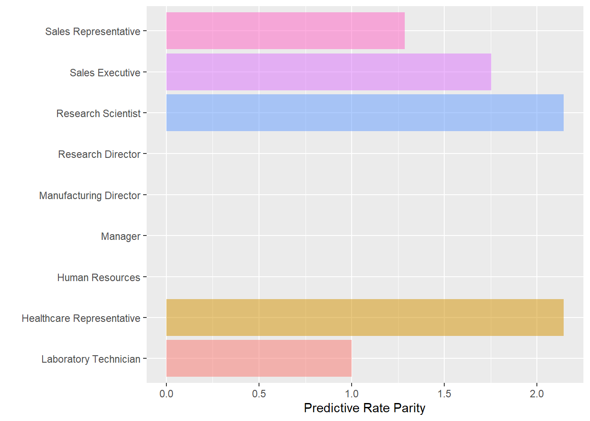
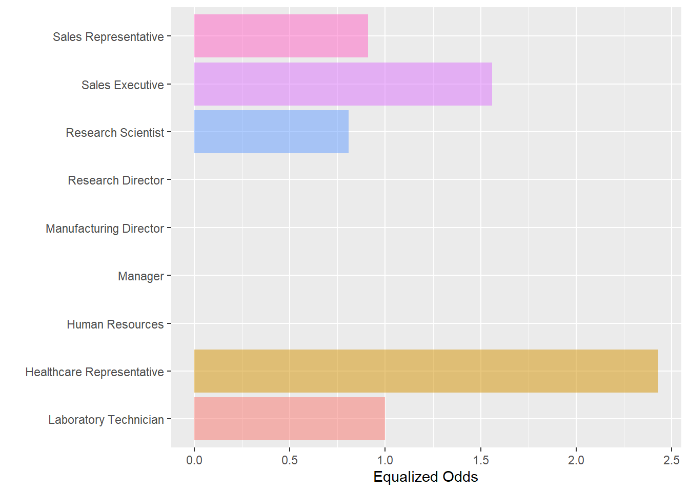
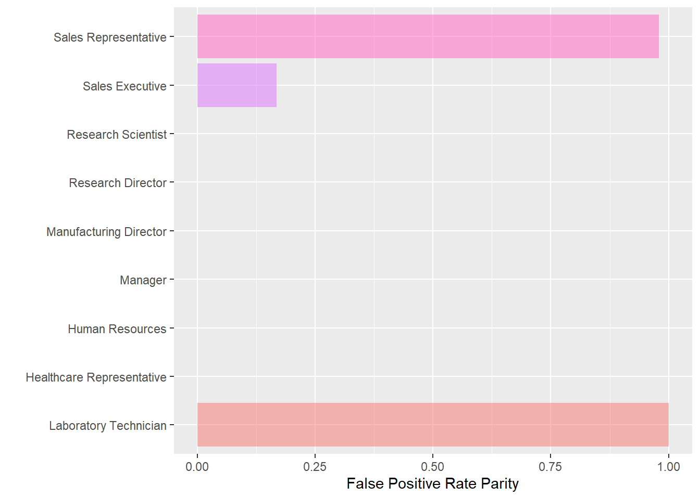

library(tidyverse) # Datahåndtering, grafikk og glimpse()
library(rsample) # for å dele data i training og testing
library(caret) # Funksjonen confusionMatrix()
library(fairness) # Beregne mål på fairness4 En lett introduksjon til fairness
I dette kapittelt skal vi bruke følgende pakker:
Det kan være nyttig å allerede såpass tidlig i kurset begynne å gjøre noen rettferdighetsbetraktninger. For å varme opp litt. Foreløpig har vi kun sett på regresjonsmodeller, og da er det begrenset i hvilken grad vi klarer tune modellene for å tilpasse ønsket resultat. Det blir mer av det siden, særlig når vi kommer til random forest. Men vi starter med å introdusere noen begreper og betraktninger.
4.1 Hva slags rettferdighet
I denne settingen kan rettferdighet kommer i betraktning på flere måter, herunder følgende:
- I hvilken grad maskiner vs mennesker tar avgjørelser, og herunder mulighet til å bli hørt og legge frem sin sak
- I hvilken grad dataene algoritmen er trent opp på inneholder skjevheter i utgangspunktet som så reproduseres i videre implementering
- I hvilken grad sluttresultatet har rimelig presisjon og akseptable feilrater, herunder vurdering av asymetriske feilrater
- I hvilken grad forrige punkt er avpasset mot hvilke tiltak man så setter i verk
- I hvilken grad feilrater og presisjon varierer systematisk med undergrupper i populasjonen
Det er nok av ting å tak i her, men vi skal her fokusere på det som kan tallfestes gitt den modellen man har. Men for all del: Hvis datakvaliteten er det begrenset hvor bra det kan bli uansett. Selv om kjente skjevheter i dataene kan i prinsippet motarbeides, så er det vel i praksis slik at en skjevhet kommer sjelden alene?
Vurderinger av overordnet feilrater er et gjennomgående tema, så vi starter med det. Deretter skal vi se på mål på skjevheter over undergrupper. Prinsippet er relativt enkelt, uten at vurderingene blir enkle av den grunn.
4.2 Mer confusion matrix
Et utgangspunkt er det vi kaller confusion matrix. Det er rett og slett en krysstabell der vi sammenholder predikert og observert utfall. Å lage en slik tabell avhenger ikke av metoden vi bruker, bare at vi kan sammenlignet prediksjon med faktisk utfall.
Vi bruker eksempelet fra forrige kapittel med logistisk regresjon.
Code
est_multlogit <- glm(Attrition ~ ., data = training, family = "binomial")
summary(est_multlogit)
Call:
glm(formula = Attrition ~ ., family = "binomial", data = training)
Deviance Residuals:
Min 1Q Median 3Q Max
-1.6886 -0.4840 -0.2374 -0.0862 3.3170
Coefficients:
Estimate Std. Error z value Pr(>|z|)
(Intercept) -1.090e+01 7.450e+02 -0.015 0.988322
Age -3.671e-02 1.637e-02 -2.243 0.024906 *
BusinessTravelTravel_Frequently 1.627e+00 4.663e-01 3.490 0.000483 ***
BusinessTravelTravel_Rarely 8.847e-01 4.265e-01 2.074 0.038070 *
DailyRate -3.249e-04 2.657e-04 -1.223 0.221450
DepartmentResearch & Development 1.303e+01 7.450e+02 0.017 0.986048
DepartmentSales 1.348e+01 7.450e+02 0.018 0.985565
DistanceFromHome 4.325e-02 1.308e-02 3.307 0.000944 ***
Education 2.259e-03 1.047e-01 0.022 0.982789
EducationFieldLife Sciences -8.614e-01 1.036e+00 -0.832 0.405637
EducationFieldMarketing -2.986e-01 1.085e+00 -0.275 0.783245
EducationFieldMedical -9.341e-01 1.037e+00 -0.901 0.367673
EducationFieldOther -8.090e-01 1.106e+00 -0.731 0.464508
EducationFieldTechnical Degree 6.014e-02 1.057e+00 0.057 0.954635
EmployeeNumber -3.297e-04 1.818e-04 -1.814 0.069727 .
EnvironmentSatisfaction -4.976e-01 9.990e-02 -4.981 6.31e-07 ***
GenderMale 2.224e-01 2.157e-01 1.031 0.302405
HourlyRate -3.877e-03 5.392e-03 -0.719 0.472136
JobInvolvement -5.454e-01 1.458e-01 -3.741 0.000183 ***
JobLevel -1.437e-02 3.834e-01 -0.037 0.970101
JobRoleHuman Resources 1.413e+01 7.450e+02 0.019 0.984868
JobRoleLaboratory Technician 1.579e+00 5.597e-01 2.822 0.004773 **
JobRoleManager -1.613e+00 1.280e+00 -1.260 0.207596
JobRoleManufacturing Director -2.403e-01 6.135e-01 -0.392 0.695291
JobRoleResearch Director -2.531e+00 1.243e+00 -2.035 0.041806 *
JobRoleResearch Scientist 3.845e-01 5.748e-01 0.669 0.503513
JobRoleSales Executive 3.167e-01 1.614e+00 0.196 0.844462
JobRoleSales Representative 1.478e+00 1.662e+00 0.890 0.373555
JobSatisfaction -3.238e-01 9.696e-02 -3.340 0.000839 ***
MaritalStatusMarried 3.633e-01 3.130e-01 1.161 0.245800
MaritalStatusSingle 9.102e-01 4.057e-01 2.243 0.024875 *
MonthlyIncome 9.730e-05 9.890e-05 0.984 0.325190
MonthlyRate 1.173e-05 1.499e-05 0.783 0.433906
NumCompaniesWorked 1.705e-01 4.652e-02 3.665 0.000248 ***
OverTimeYes 1.892e+00 2.308e-01 8.195 2.50e-16 ***
PercentSalaryHike -6.513e-02 4.714e-02 -1.382 0.167122
PerformanceRating 6.772e-01 4.816e-01 1.406 0.159676
RelationshipSatisfaction -3.888e-01 9.884e-02 -3.934 8.37e-05 ***
StockOptionLevel -2.737e-01 1.822e-01 -1.502 0.133202
TotalWorkingYears -6.528e-02 3.587e-02 -1.820 0.068731 .
TrainingTimesLastYear -2.136e-01 8.571e-02 -2.492 0.012712 *
WorkLifeBalance -2.117e-01 1.469e-01 -1.441 0.149470
YearsAtCompany 6.602e-02 4.876e-02 1.354 0.175764
YearsInCurrentRole -1.021e-01 5.548e-02 -1.840 0.065748 .
YearsSinceLastPromotion 2.056e-01 5.166e-02 3.979 6.91e-05 ***
YearsWithCurrManager -1.933e-01 6.078e-02 -3.180 0.001473 **
---
Signif. codes: 0 '***' 0.001 '**' 0.01 '*' 0.05 '.' 0.1 ' ' 1
(Dispersion parameter for binomial family taken to be 1)
Null deviance: 944.39 on 1101 degrees of freedom
Residual deviance: 616.66 on 1056 degrees of freedom
AIC: 708.66
Number of Fisher Scoring iterations: 15Så kan vi gjøre en prediksjon på testing-datasettet og lagre resultatet i et nytt objekt. Vi gjør en klassifisering ved å bestemme en cut-off på f.eks. en sannsynligheten over 50%.
Code
attrition_test <- testing %>%
mutate(prob = predict(est_multlogit, newdata = testing, type = "response")) %>%
mutate(attrition_class = as.factor(ifelse(prob < .5, "No", "Yes")))Så kan vi lage confusion matrix som følger. Vi bruker funksjonen confusionMatrix() for at diverse mål skal blir regnet ut automatisk for oss, men du kan godt regne ut dette for hånd også (hvis du gidder).
Code
cm <- confusionMatrix(attrition_test$Attrition, attrition_test$attrition_class, positive = "Yes")
cmConfusion Matrix and Statistics
Reference
Prediction No Yes
No 288 12
Yes 42 26
Accuracy : 0.8533
95% CI : (0.8129, 0.8878)
No Information Rate : 0.8967
P-Value [Acc > NIR] : 0.9965
Kappa : 0.4128
Mcnemar's Test P-Value : 7.933e-05
Sensitivity : 0.68421
Specificity : 0.87273
Pos Pred Value : 0.38235
Neg Pred Value : 0.96000
Prevalence : 0.10326
Detection Rate : 0.07065
Detection Prevalence : 0.18478
Balanced Accuracy : 0.77847
'Positive' Class : Yes
Hvorvidt dette er “rettferdig” eller ikke kommer jo an på hva man skal gjøre med denne prediksjonen. Så det er jo en første vurdering. Synes man feilratene er ok? Er evt. konsekvensene av å ikke gjøre noe ok?
I dette eksempelet er positive predictive value 0.38 som altså er andelen av de som er predikert som positive som er rett. Det betyr at hvis vi setter i verk tiltak mot alle som er predikert positive, så vil 0.62 være bortkastet. På den annen side, vil 0.68 av de som faktisk er positive fanges opp (sensitivity).1
4.3 Mål på fairness
4.3.1 Predictive rate parity
Ovenfor så vi blant annet at “positive predicted value” , altså andelen sanne positive av alle predikerte positive, er 0.382.
Men det er ulike typer jobber i denne bedriften. Her er fordelingen for test-datasettet:
#StandWithUkraine| Characteristic | Overall, N = 3681 | No, N = 3001 | Yes, N = 681 |
|---|---|---|---|
| JobRole | |||
| Healthcare Representative | 32 (100%) | 31 (97%) | 1 (3.1%) |
| Human Resources | 14 (100%) | 11 (79%) | 3 (21%) |
| Laboratory Technician | 64 (100%) | 47 (73%) | 17 (27%) |
| Manager | 27 (100%) | 24 (89%) | 3 (11%) |
| Manufacturing Director | 32 (100%) | 29 (91%) | 3 (9.4%) |
| Research Director | 18 (100%) | 17 (94%) | 1 (5.6%) |
| Research Scientist | 77 (100%) | 59 (77%) | 18 (23%) |
| Sales Executive | 84 (100%) | 70 (83%) | 14 (17%) |
| Sales Representative | 20 (100%) | 12 (60%) | 8 (40%) |
| 1 n (%) | |||
For illustrasjonens skyld kan vi da dele inn datamaterialet i to deler: lab-teknikkere og resten. For hver gruppe kan vi så lage en confusion matrix og undersøke verdiene.
Code
labTech <- attrition_test %>%
filter(JobRole %in% c("Laboratory Technician"))
others <- attrition_test %>%
filter( !(JobRole %in% c("Laboratory Technician") ))
cm1 <- confusionMatrix(labTech$Attrition, labTech$attrition_class, positive = "Yes")
cm2 <- confusionMatrix(others$Attrition, others$attrition_class, positive = "Yes")
cm1 Confusion Matrix and Statistics
Reference
Prediction No Yes
No 39 8
Yes 10 7
Accuracy : 0.7188
95% CI : (0.5924, 0.824)
No Information Rate : 0.7656
P-Value [Acc > NIR] : 0.8490
Kappa : 0.251
Mcnemar's Test P-Value : 0.8137
Sensitivity : 0.4667
Specificity : 0.7959
Pos Pred Value : 0.4118
Neg Pred Value : 0.8298
Prevalence : 0.2344
Detection Rate : 0.1094
Detection Prevalence : 0.2656
Balanced Accuracy : 0.6313
'Positive' Class : Yes
Code
cm2Confusion Matrix and Statistics
Reference
Prediction No Yes
No 249 4
Yes 32 19
Accuracy : 0.8816
95% CI : (0.8398, 0.9157)
No Information Rate : 0.9243
P-Value [Acc > NIR] : 0.997
Kappa : 0.4569
Mcnemar's Test P-Value : 6.795e-06
Sensitivity : 0.82609
Specificity : 0.88612
Pos Pred Value : 0.37255
Neg Pred Value : 0.98419
Prevalence : 0.07566
Detection Rate : 0.06250
Detection Prevalence : 0.16776
Balanced Accuracy : 0.85610
'Positive' Class : Yes
Positive predicted value for lab-teknikker er 0.412 og for resten 0.373.
Forholdstallet mellom disse er 0.9047619, alså nesten likt. Slik sett kan vi si at modellen er rettferdig på dette målet ved at disse to gruppene er like.
Men hvis du sjekker output fra confusionMatrix ovenfor, så er jo ikke alle tallene like. Så det kommer an på hvilke mål du sammenligner.
Pakken fairness gjør en tilsvarende beregning for deg og kan gi resultatet grafisk. Her er sammenligning av positive predicted value gjort for alle grupper av jobber:
Code
pred_rate_parity(data = attrition_test,
outcome = "Attrition",
group = "JobRole",
preds = "attrition_class",
base = "Laboratory Technician"
)$Metric
Laboratory Technician Healthcare Representative
Precision 0.4666667 1.000000
Predictive Rate Parity 1.0000000 2.142857
Group size 64.0000000 32.000000
Human Resources Manager Manufacturing Director
Precision NA NA NA
Predictive Rate Parity NA NA NA
Group size 14 27 32
Research Director Research Scientist Sales Executive
Precision NA 1.000000 0.8181818
Predictive Rate Parity NA 2.142857 1.7532468
Group size 18 77.000000 84.0000000
Sales Representative
Precision 0.600000
Predictive Rate Parity 1.285714
Group size 20.000000
$Metric_plot
Nå er det vesentig større forskjeller. Utvilsomt er grunnen at gruppen av ‘andre’ var sammensatt av veldig ulike grupper som var veldig forskjellig innbyrdes, men som jevnet hverandre ut i snitt. Noen av disse gruppene var dessuten små.
Man kan mene ulikt om slikt, men det er i hvert fall ikke likt på tvers av grupper.
Men hvilke konsekvenser har dette? Treffsikkerheten er da lavere for laboratorie-teknikkerne enn for de andre gruppene. Ikke sikkert det er så nøye.
Men la oss si at man bestemmer seg for å gi en solid lønnsforhøyelse (eller andre goder) til de man tror er i fare for å bytte jobb. Da vil bedriften bruke unødig mye midler på lab-teknikkerne (dvs. relativt mange falske positive) relativt til andre grupper .
Men man kunne også tenke seg et negativt tiltak: de som er predikert å ville slutte vil ikke få lønnsforhøyelse eller andre goder. Hvis vurderingen er at de vil slutte uansett, så er det bortkastede ressurser. Flere blant lab-teknikerne ville da urettmessig få avslag.
Ok. Det ville uansett være en lite klok arbeidsgiver som baserer seg kun på dette. Det finnes bedre måter å beholde arbeidstakerne sine på. Men man kan tenke seg andre situasjoner der konsekvensene er tydeligere: Hva om det var en automatisert sjekk av kredittverdighet for å få boliglån? Eller kanskje opptak til et lederprogram? Eller risikovurdering for prøveløslatelse fra fengsel?
4.3.2 Equalized odds
En annen variant er å se på andelen sanne positive av andelen som faktisk er positive. Altså: andelen som er predikert å slutte av de som faktisk slutter.
(I følgende kode er det lagt på [[2]] på slutten for å bare vise figuren, altså droppe tabellen. Akkurat den dele av koden er ikke viktig).
Code
equal_odds(data = attrition_test,
outcome = "Attrition",
group = "JobRole",
preds = "attrition_class",
base = "Laboratory Technician"
)[[2]] 
4.3.3 False positive rate parity
Er falske positive rate i ulike grupper lik?
Code
fpr_parity(data = attrition_test,
outcome = "Attrition",
group = "JobRole",
preds = "attrition_class",
base = "Laboratory Technician"
)[[2]] 
4.4 Litt oppsummerende
Den R-pakken vi bruker her har en hel rekke ulike mål innebygget. Se en oversikt på pakkens vignette.
Hvilket mål som er viktigst er det derimot ikke noe klart svar på. Det kommer an på hva man har tenkt til å bruke prediksjonen til, hvilke konsekvenser tiltaket har, og hvilke konsekvenser det har å ikke gjøre noe. Disse konsekvensene kan vurderes forskjellig for personer etter om det er riktig eller feil prediksjon.
Det du må ta stilling til er egentlig hvor viktig du synes likebehandling er! Ofte er jo det åpenbart veldig viktig.
Så bør det nevnes at noen ganger ville man gjort noe uansett. Altså gjort de samme tiltakene basert på skjønn eller andre typer vurderinger. Det vil også ha feilrater og forskjeller mellom undergrupper i slike tilfeller, selv om man ikke har et oppsett som gir testing-data å estimere dette på. Det betyr at du ikke bare må ta stilling til om algoritmen er “fair” eller ikke, men også om den er mer eller mindre “fair” enn den alternative fremgangsmåten.
4.5 Oppgaver
Exercise 4.1 Gå gjennom eksempelet over og repliker disse analysene slik at du ser at du skjønner hvordan det fungerer.
Exercise 4.2 Regn ut minst tre ulike mål på fairness og velg selv over hvilke grupper. Gi en forklaring på hva hver av dem betyr.
Exercise 4.3 Det er mange muligheter her: ulike mål og flere grupper. Man kan også kombinere grupper på flere måter. Gjør følgende vurderinger:
- Er det rimelig å gjøre en prediksjon som gir like resultater på tvers av alle mål og grupper? Kan du i det hele tatt få en “fair” modell?
- Hvilke mål på “fairness” vil du si er viktigst i dette eksempelet? Hvorfor?
Exercise 4.4 Kanskje hjelper det å estimere en annen modell? Estimer en ny logistisk regresjon, men velg bare et fåtall variable som du velger selv. Hold det enkelt i første omgang. Se på resultatene og vurder:
- Ble accuracy bedre eller verre?
- Ble resultatet mer “fair”?
Exercise 4.5 Velg et nytt datasett, gjør en prediksjon med logistisk regresjon og regn ut mål på “fairness” igjen. Gjør tilsvarende som over.
4.6 Refleksjonsoppgaver
Exercise 4.6 Studien til Caspi et al. (2017) bruker regresjon for å predikere hvem som tilhører den gruppen med konsentrasjon av sosiale problemer. (Det er en litt annen type modell enn logisk regresjon, men det spiller egentlig liten rolle). Diskuter følgende:
- Hva slags informasjon synes du mangler for å vurdere treffsikkerheten på prediksjonsmodellen?
- Hva slags tiltak er det tenkt å settes i verk når man har identifisert hvem som får problemer i voksen alder?
- Basert på hvordan prediksjonen skal brukes hva tenker du er akseptable feilrater?
- Er det behov for å vurdere “fairness” grundigere her?
Exercise 4.7 Studien til Berk, Sorenson, and Barnes (2016) bruker andre typer modeller enn vi har sett på til nå. Se bort fra akkurat det tekniske i modeller og justeringer, men se diskusjonen av resultatet presentert som confusion matrix. Se for deg at dette blir de faktiske resultatene for fengsling eller ikke-fengsling og vurder følgende:
- Synes du at forholdstallet 1 til 10 for falske positive/negative er ok i denne settingen? Hvis du skal foreslå noe annet, hva vil du si da?
- Er det grunn til å tro at man bør undersøke “fairness” grundigere her? I så fall: hvilke undergrupper mener du er mest viktig å undersøke dette for?
Berk, Richard A., Susan B. Sorenson, and Geoffrey Barnes. 2016. “Forecasting Domestic Violence: A Machine Learning Approach to Help Inform Arraignment Decisions.” Journal of Empirical Legal Studies 13: 94–115. https://doi.org/10.1111/jels.12098.
Caspi, Avshalom, Renate M. Houts, Daniel W. Belsky, Honalee Harrington, Sean Hogan, Sandhya Ramrakha, Richie Poulton, and Terrie E. Moffitt. 2017. “Childhood Forecasting of a Small Segment of the Population with Large Economic Burden.” Nature Human Behavior 1 (5): 223–40. https://doi.org/https://doi-org.ezproxy.uio.no/10.1038/s41562-016-0005.
For akkurat dette kurset er ikke disse tekniske begrepene som sensitivity, specificity osv sentrale. (Emneansvarlig går surr i disse selv). Men det forventes at du skal kunne formulere det på tilsvarende måte som her. Men du må huske accuracy, som er den enkleste.↩︎